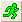

Alle Analysehilfsmittel und die meisten anderen Datenverarbeitungsdialoge enthalten die Funktion Neu berechnen, die sich normalerweise obven im Dialog befindet, wo Sie Ihre Eingabedaten festlegen.
Verwenden Sie dieses operationsspezifische Bedienelement, um zu bestimmen, wie die Software Änderungen an den Eingabedaten behandelt. Wählen Sie einen der drei Modi -- Kein, Auto und Manuell (siehe Tabelle unten). Zusammengefasst gibt es folgende Optionen: Kein = keine Neuberechnung, Auto = Neuberechnung automatisch auslösen und Manuell = Neuberechnung manuell auslösen.
| Kein |
Wird Neu berechnen auf Keine gesetzt, ist die Ausgabe von den Eingabedaten getrennt. Nachfolgende Änderungen an den Eingabedaten führen zu keiner Aktualisierung der ursprünglichen Ausgabedaten. Außerdem ist es nicht möglich, den Dialog mit dem Kontextmenübefehl Parameter ändern (siehe unten) erneut zu öffnen und Anpassungen an den Analyseparametern vorzunehmen (der Dialog Werte setzen ist die einzige Ausnahme). |
|---|---|
| Auto |
Wird Neu berechnen auf Automatisch gesetzt, werden die Ergebnisse automatisch aktualisiert, wenn sich die Eingabedaten ändern. |
| Manuell (Standard) |
Wird Neu berechnen auf Manuell gesetzt, können Sie eine Aktualisierung manuell herbeiführen, nachdem sich die Eingabedaten geändert haben. |
Die Anwesenheit der Neuberechnungsoperationen in einem Origin-Projekt erzeugt mehrere visuelle Hinweise für den Anwender:

Die folgende Tabelle fasst die verschiedenen Neuberechnungsschaltflächen und -symbole zusammen und erläutert ihre jeweilige Bedeutung.
| Schaltfläche / Symbol | Beschreibung |
|---|---|
|  | Befindet sich auf der Symbolleiste Standard. Eine grüne Schaltfläche signalisiert, dass es keine Neuberechnungsoperationen gibt, die für das Projekt ausstehen. |
| Befindet sich auf der Symbolleiste Standard. Eine gelbe Schaltfläche signalisiert, dass es manuelle Neuberechnungsoperationen gibt, die für das Projekt ausstehen. | |
| Befindet sich auf der Symbolleiste Standard. Eine abgeblendete Schaltfläche signalisiert, dass die Neuberechnungsoperationen entweder nicht im Projekt existieren oder in der Sitzung gesperrt sind (siehe oben). | |
| Befindet sich auf den Symbolleisten Standard und Automatisch aktualisieren. Wenn sie angeklickt wird, wird die Schaltfläche Neuberechnung (grün oder gelb) abgeblendet und die Operationen werden angehalten, bis erneut auf die Schaltfläche geklickt wird. | |
| Verbundene Operationen werden auf Neu berechnen = Auto gesetzt. Keine ausstehenden Operationen. Das Schloss der Hauptoperation wird auf der Spalte ganz links als | |
| Verbundene Operationen werden auf Neu berechnen = Manuell gesetzt. Keine ausstehenden Operationen. Anfänglich werden alle manuellen Neuberechnungen grün angezeigt. Die verbundenen aktualisierten Operationsspalten rechts von der Hauptoperation zeigt das Symbol "+" | |
| Verbundene Operationen werden auf Neu berechnen = Manuell gesetzt. Wenn die Eingabe für die aktuellen manuellen Operationen sich ändert, wechselt das Symbol von grün zu gelb. Die verbundenen ausstehenden Operationsspalten rechts von der Hauptoperation zeigt das Symbol "+" an. | |
| Wenn ein Schlosssymbol dunkelgrau mit der Farbe angezeigt wird, ist das ein Hinweis darauf, dass die zugehörige Operation in OriginPro in durchgeführt wurde und das Fenster oder Projekt in der Standardversion von Origin geöffnet wurde. Die Operation wird von der Standardversion von Origin nicht unterstützt. Um die Analyse zu modifizieren oder erneut durchzuführen, benötigen Sie einen Computer mit einer OriginPro-Lizenz. | |
| Ein rotes Schlosssymbol signalisiert, dass etwas aufgetreten ist, dass eine weitere Neuberechnung verhindert. Diese Zustände treten selten auf, tun dies aber, wenn Sie beispielsweise eine Projektdatei, die eine benutzerdefinierte Kurvenanpassungsoperation enthält, an einen Kollegen weitergeben, dabei aber vergessen, Ihre benutzerdefinierte Anpassungsfunktion mitzugeben. | |
| Das Verwenden einer Sperre für aktuelle Neuberechnungen platziert ein grünes "Sperrsymbol" auf allen zugehörigen Operationen in der Kette. | |
| Das Verwenden einer Sperre für ausstehende Neuberechnungen oder das Ändern der Eingabe für eine gesperrte aktuelle Neuberechnungsoperation platziert ein gelbes "Sperrsymbol" auf allen zugehörigen Operationen in der Kette. |
Wenn Sie keine der oben beschriebenen Schaltflächen sehen, können Sie den Dialog Anpassen (Symbolleisten) öffnen und die Schaltfläche(n) zum Arbeitsbereich hinzufügen. |
Sie können auf ein Schlosssymbol in einer Grafik oder einem Berichtsblatt klicken und ein Kontextmenü öffnen. Die aufgelisteten Optionen werden in der folgenden Tabelle erklärt. Die Menüoptionen hängen von der Operation ab.
| Modus Neuberechnung |
Die Ergebnisspalten/-blätter werden neu berechnet und die Ergebnisse aktualisiert. Wenn ein Schloss grün ist (Auto oder Manuell), wird die Option Neu berechnen abgeblendet. | ||
|---|---|---|---|
| Parameter ändern |
Öffnet den ursprünglichen Dialog zum Ändern der Einstellungen. | ||
| Löschen |
Löscht alle Ausgabeergebnisse, die mit dieser Operation zusammenhängen. Ergebnisse können nach dem Löschen nicht wiederhergestellt werden. | ||
| Gehe zu Quelle |
Wechselt zu dem Arbeitsblatt, das die Eingabedaten dieser Operation enthält. Wenn diese Operation mehrere Quellarbeitsblätter hat, wechselt Origin zum ersten. Wenn diese Operation über mehrere Schloss-Symbole verfügt, wechselt Origin zum ersten Ergebnisblatt dieser Operation. (um die sich überschneidenden Schloss-Symbole zu unterscheiden, ändern Sie die Position des Schloss-Symbols über das Layersymbol in Erster Punkt oder Letzter Punkt, indem Sie Daten: Position feststellen: Erster Punkt/Letzter Punkt.) | ||
| Zum Diagramm gehen |
Gehen Sie zum Quelldiagramm, das die Eingabezeichnung enthält. Hinweis: Dieses Elemente ist nur verfügbar, wenn diese Operation von einem Diagrammfenster aus gestartet wird. Wenn diese Operation mehrere Quelldiagramme hat, geht Origin zum ersten. Wenn diese Operation über mehrere Schlosssymbole verfügt, geht Origin zum ersten Ergebnisdiagramm dieser Operation. (um die sich überschneidenden Schloss-Symbole zu unterscheiden, ändern Sie die Position des Schloss-Symbols über das Layersymbol in Erster Punkt oder Letzter Punkt, indem Sie Daten: Position feststellen: Erster Punkt/Letzter Punkt.) | ||
| Gehe zu Ergebnissen |
Es wird zum Ergebnisblatt dieser Operation gewechselt. Dieses Menü ist verfügbar, wenn ein Diagrammfenster aktiv ist. Wenn diese Operation mehrere Ergebnisblätter hat, wechselt Origin zum ersten. Wenn diese Operation über mehrere Schloss-Symbole verfügt, wechselt Origin zum ersten Ergebnisblatt dieser Operation. | ||
| Analysemarkierer |
Steuern Sie die Anzeige der Analysemarker im Diagrammfenster. Nur im Kontextmenü des Diagrammfensters | ||
| Eingabedaten mit Datenmarkern zeichnen |
Zeichnen Sie die Eingabedaten mit Datenmarkern in einem neuen Diagrammfenster. Nur im Kontextmenü des Arbeitsblatts | ||
| Modus Neu berechnen: Manuell/Automatisch/Kein |
Der gewählte Modus wird mit einem Häkchen markiert. Ändern Sie den Modus, indem Sie eine andere Option auswählen. | ||
| Sperren Sie die Neuberechnung. |
Klicken Sie auf Neuberechnungen sperren, um die Neuberechnung für diese Operation und alle anderen Operationen in der Kette auszusetzen. Für ausstehende Neuberechnungen wird ein gelbes "Sperrsymbol" | ||
| Verborgene Zeilen ignorieren |
Wählen Sie diese Option im Untermenü, um verborgene Zeilen während der nachfolgenden Zeichen- und Analyseoperation zu ignorieren oder einzuschließen (gefilterte Daten). Auto bedeutete, dass der Einstellung Verborgene Zeilen beim Zeichnen und Analysieren ignorieren auf der Registerkarte Verschiedenes im Dialog Arbeitsblatteigenschaften gefolgt wird. Beachten Sie, dass die Hilfsmittel Werte setzen und Spalten kopieren into, die X-Funktion nlbegin und die Operation mit einer Matrix als Eingabe dieses Menü nicht unterstützen. | ||
| Informationen anzeigen |
Schreiben Sie Anmerkungen und Informationen über Eingabe/Ausgabe in das Skriptfenster. | ||
| Design speichern unter |
Speichern Sie zugehörige Analysedialogparameter als ein Design, das verwendet werden kann, um die gleiche Operation für neue Datensätze zu wiederholen. | ||
| Operation kopieren |
Die Analyseoperation der aktuellen Kurve wird für andere Diagramme kopiert, wenn eine 2D- und 3D-Anpassungsanalyse, mit Ausnahme einer multiplen linearen Anpassung, durchgeführt wird. Um die Analyseoperation einzufügen, klicken Sie mit der rechten Maustaste auf die Zielzeichnung, die gruppierten Zeichnungen, den Layer oder die gesamte Grafik und wählen Sie Operation einfügen im Kontextmenü. Beachten Sie, dass Origin keine unterschiedlichen Arten von Dateneingaben zulässt, um eine Operation einzufügen. Weitere Einzelheiten finden Sie unter Operation kopieren/einfügen. Dieses Menü ist nicht für die Neuberechnung von Matrixdaten verfügbar. | ||
| Diese Operation duplizieren |
Neuberechnen ist nützlich bei Datenänderungen. Operation kopieren ist nützlich zum Anwenden einer Analyse auf andere Diagramme. Diese Operation duplizieren ist nützlich zum Vergleichen von Ergebnissen nach Änderung der Operationsparameter. Führen Sie Ihre anfängliche Operation durch, klicken Sie dann auf das Schloss und wählen Sie Diese Operation duplizieren. Dies fügt (a) ein neues Operationsschloss zum Diagrammfenster oder (b) einen neuen Satz Ausgabeblätter zur Arbeitsmappe hinzu. Klicken Sie auf ein neu hinzugefügtes Schlosssymbol und ändern Sie die Parameter, um nur die duplizierte Operation zu aktualisieren. Vergleichen Sie mit den Ergebnissen der anfänglichen Operation. | ||
| Dies für alle Zeichnungen/Y-Spalten wiederholen |
Die Analyse der aktuellen Zeichnung/Y-Spalte wiederholen für:
Wenn es mehrere Zeichnungen in der Grafik gibt oder mehrere Y-Spalten im Quellblatt gibt und Sie für eine von ihnen eine Analyse durchgeführt haben, verwenden Sie dieses Kontextmenüelement, um die gleiche Analyse für alle anderen Zeichnungen/Y-Spalten durchzuführen. Weitere Informationen finden Sie unter Analyse für andere Datensätze oder Datenzeichnungen wiederholen. Dieses Menü ist nicht für die Neuberechnung von Matrixdaten verfügbar.
|
Manchmal müssen Sie gesperrte Operationen für die Nachbearbeitung entfernen.
Hinweise:
|